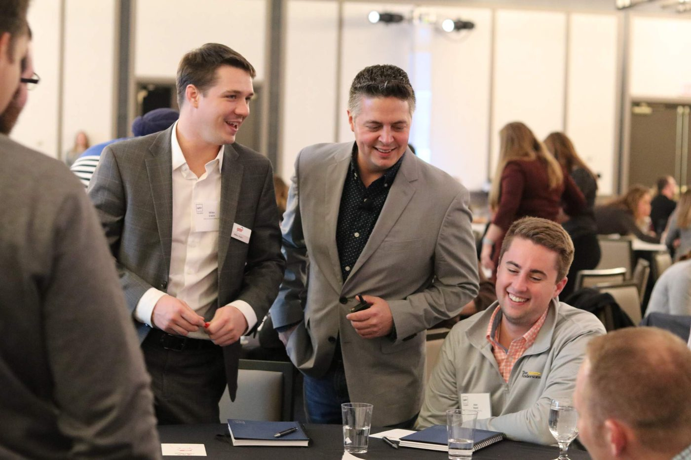
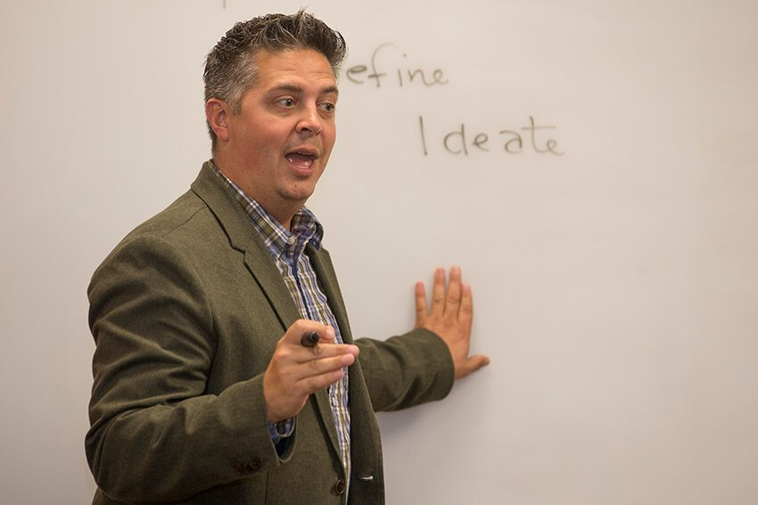

Talks
Slides from recent presentations, followed by every talk, keynote, and poster since 2006.


Recent slides
- Building a department-wide AI policy: A collaborative workshop Academic Chairpersons Conference, Atlanta, 2026 Slides
- Learner Experience Design for curriculum development and increased student engagement Keynote, Georgia State University Perimeter College unDistance Learning Conference, 2025 SlidesBreakout worksheets
- Human-centered AI collaboration for rapid UX design Workshop, Great Minds in STEM Conference, Albuquerque, 2025 Slides (PDF)
- Optimizing AI interactions: A practical guide to prompt engineering for LLMs AI Hospitality and Tourism Innovation Symposium, Chicago, 2024 Slides
- Reaffirming instructors' irreducible humanity Kuyers/Inche/DeVries Conference, Grand Rapids, 2024. With M. Schumann. Slides
All presentations
101 presentations
No presentations match. Try another word or choose All.
2026
- Building Mission-Aligned AI Policy at an HSIPosterAAC&U Conference on AI and Higher Education. Atlanta, GA. October 28–30.
- Undergraduate Research Immersion: A Two-Week Micro-Internship ExperiencePosterCRA NAIRR Pilot Expansion Conference for Minority Serving Institutions. Portland, OR. August 10.
- Specialized Design Heuristics that Optimize Interactions for Older AdultsPosterDesta, Y. K. & Schnepp, J.HCI International. Montreal, Canada. July 26–31.
- Exploring AI-Enhanced Learning with Vibe Coding: A Computer Science Micro-Internship ProjectNational Conference on Undergraduate Research (NCUR). Richmond, VA. April 14.
- Building a Department-Wide AI Policy: A Collaborative WorkshopAcademic Chairpersons Conference (ACC). Atlanta, GA. February 6.
- Leadership Doesn't Have to be Lonely: Starting Up A Cross-Institutional Collaborative Writing GroupSchnepp, J., Radina, M., Hanasono, L., Koolage, J., Ludy, M.J., & Sheffer, J.Academic Chairpersons Conference (ACC). Atlanta, GA. February 6.
2025
- Learner Experience Design for Curriculum Development and Increased Student EngagementKeynoteGeorgia State University's Perimeter College unDistance Learning Conference. Atlanta, GA. October 7.
- Human-Centered-AI Collaboration for Rapid UX DesignGreat Minds in STEM Conference. Albuquerque, NM (invited). September 17–19.
- Thriving in an AI-Enriched University: Best Practices for Faculty SuccessAcademic Chairpersons Conference (ACC). Indianapolis, IN. February 6.
2024
- Optimizing AI Interactions: A Practical Guide to Prompt Engineering for LLMsAI Hospitality & Tourism Innovation Symposium. Chicago, IL. November 14.
- AI Tools, Tips, and Tricks for EducatorsSchnepp, J. and Rogers, C.International Society for Exploring Teaching and Learning Conference. Montgomery, AL. October 16.
- Cultivating Christian Perspectives in the Digital Age: Reflections on a Computer Science Course that Navigates the Intersection of Faith and TechnologyIntegrated Education in a Reductionist Age, Kuyers/Inche/DeVries Conference. Grand Rapids, MI. October 11.
- Reaffirming Instructors' Irreducible HumanitySchumann, M. & Schnepp, J.Integrated Education in a Reductionist Age, Kuyers/Inche/DeVries Conference. Grand Rapids, MI. October 11.
- Panel: Perspectives on the experiences of students in Illinois College Computer Science and Tech programsSamuels, A.N., Schnepp, J., & Ward, D.IWERC Research Briefing: Participation, Persistence, and Experiences of CS and Tech College Students in Illinois. Chicago, IL. September 21.
- Learner Experience Design: A Human-Centered Approach to Collaborative Curricular InnovationKeynoteSchnepp, J. & Rogers, C.8th Canadian International Conference on Advances in Education, Teaching & Technology. Toronto, Canada. June 15–16.
- Embracing Technology in the Classroom: Innovations and ChallengesPanelGarratt-Reed, D., Rogers, C., & Schnepp, J.8th Canadian International Conference on Advances in Education, Teaching & Technology. Toronto, Canada. June 15–16.
- AI Echo: A framework for generative AI bias mitigationDavidson, J., Gupta, A., & Schnepp, J.Midwest Decision Sciences Institute Annual Conference. Youngstown, OH. April 12.
- Leadership Doesn't Have to be Lonely: Co-writing to Build CommunityRadina, M., Hanasono, L., Koolage, J., Ludy, M.J., Schnepp, J., & Sheffer, J.Academic Chairpersons Conference (ACC). Indianapolis, IN. February 8.
- Why Should Teachers Embrace Learner Experience Design?Schnepp, J. & Rogers, C.The eLearn Magazine Podcast with Chris Ladek. January 31.
- Integrating and Assessing Computational Thinking in K-12 ClassesNorthwest Ohio Center for Excellence in STEM Education. Perrysburg, OH. January 11.
2023
- Empowering Educators with AI: How to Harness Large Language Models for Innovative Teaching and ResearchAssociated Colleges of the Chicago Area (ACCA) Conference. Elgin, IL. November 4.
- From Insights to Actions: Interviews for Effective Learner Experience DesignSchnepp, J. and Rogers, C.The International Society for Exploring Teaching and Learning Conference on Horizon Technologies in Higher Education: Teaching and Learning in a Time of Change. New Orleans, LA. October 18.
- From Learner Insights to Actionable Recommendations: A Guide for Effective Learner InterviewsPosterSchnepp, J. & Rogers, C.Educause. Chicago, IL. October 9–12.
- Collaborative and Iterative UX Curriculum DevelopmentConveyUX. Online. May 3.
- Learner Experience Design: Insights from Students Lead to Curricular InnovationSpring Faculty Workshop. Judson University, Elgin, IL. May 11.
- Challenges and Opportunities to Empower Women in STEM DisciplinesAdvancing Women in Leadership Conference. Elgin, IL. March 6.
- Research and Evaluation Methodologies for Human-Computer InteractionThe Doctor of Education in Computer Science Spring Residency. Judson University, Elgin, IL. March 18.
- Reframe Learning Through the Students' Eyes: Learner Experience DesignSchnepp, J.& Rogers, C.AAC&U’s Conference on General Education, Pedagogy and Assessments. New Orleans, LA. February 10.
- Leadership doesn't have to be lonely: Creating cross-institutional communitySchnepp, J., Hanasono, L., Koolage, J., Ludy, M.J., Radina, M., & Sheffer, J.Academic Chairpersons Conference (ACC). New Orleans, LA. February 9.
- Fostering Computational Thinking across STEM DisciplinesProfessional Development Seminar for Faculty, Toledo Public Schools. Perrysburg, OH. February 16.
2022
- Refine your Pedagogy through Learner Experience DesignAssociated Colleges of the Chicago Area (ACCA) Conference. Elgin, IL. November 5.
- Refining Assessment Through Learner Experience DesignSchnepp, J. & Rogers, C.The Assessment Institute Conference. Indianapolis, IN. October 10.
- Learner Experience Design: A Practical Approach for Empathetic EducatorsSchnepp, J. & Rogers, C.Association for the Advancement of Computing in Education: EdMedia + Innovate Learning Summit. New York, NY. June 21.
- Augmented Reality and Virtual Reality Tools for Higher EducationOhio Higher Education Computing Council. Athens, OH. May 19.
- Navigating Complex Academic Honesty IssuesTeaching and Learning Summit. Bowling Green, OH. March 23.
- Panel on Innovative PedagogyGoedde, A., Hammady, C., Hanasono, L., & Schnepp, J.Teaching and Learning Summit. Bowling Green, OH. March 23.
- The Land on Which We Stand: Finding A Common Ground through Community-Engaged Design ThinkingPosterStucker, J. & Schnepp, J.Venturewell. Online. March 15–17.
- Collaborative Learning in College ClassroomsFaculty Colloquium on Critical Thinking: It's Good for You, It's Good for Me. Cleveland, OH. January 11.
2021
- Participatory Curriculum Design: Letting Students Take the LeadScholarship of Teaching and Learning Conference. Bowling Green, OH. July 26.
- What Works F2F / What works Online?Goedde, A., Cady, S., Hammady, C., Hanasono, L., & Schnepp, J.Scholarship of Teaching and Learning Conference. Bowling Green, OH. July 26.
- Empathy-Based Decision MakingMeeting of the Association for Talent Development, Greater Toledo Area Chapter. Online. May 19.
2020
- Using STEAM to Develop Middle School Students’ Computational ThinkingRoberts, T., & Schnepp, J.The Annual Meeting of the School Science and Mathematics Association. Minneapolis, MN. November 18.
- Keep them Doing: Active Learning Strategies and Technologies for Remote Synchronous LearningFall Flex Conference. Online. June 2.
- Collaborative Human-Centered DesignInternational Network for the Science of Team Science (SciTS). Online. June 2.
- Design Thinking as a way of Communicating through ChangeOhio LEADS Virtual Summit. Online. June 1–4.
- Promoting Innovative Pedagogy through Learner Experience DesignThe University of Illinois at Chicago Electronic Visualization Lab. Chicago, IL. February 26.
2019
- Innovative Solutions through Human-Centered DesignThe Toledo Human Resource Associations’ Conference. Perrysburg, OH. November 7.
- Building Effective Assessments through Empathy for StudentsRogers, C & Schnepp, J.The Assessment Institute Conference. Indianapolis, IN. October 13–15.
- Transforming Student Engagement through Learner Experience DesignSchnepp, J. & Rogers, C.International Society for Exploring Teaching and Learning Conference on Innovative Higher Education Pedagogy. Charlotte, NC. October 10–12.
- Build Prototypes Fast. Test. Iterate. InnovateInternational Society for Exploring Teaching and Learning Conference on Innovative Higher Education Pedagogy. Charlotte, NC. October 10–12.
- Fostering a Culture of Innovation on CampusThe Innovation Design Collaborative, San Jose State University, San Jose, CA. June 7.
- BYOV (Build Your Own Villain) ChallengeBatman in Popular Culture Conference. Bowling Green, OH. April 12–13.
- STEAMing through the summer: An art and robotics informal learning experienceRoberts, T., Schnepp, J., Crabtree, H. & Daniels, S.Hawaii International Conference on Education. Honolulu, HI. January 5–8.
2018
- Creative Problem Solving Through Design ThinkingNWO Annual Symposium on Science, Technology, Engineering, and Mathematics Teaching. Bowling Green State University, Bowling Green, OH. November 18.
- Creative Problem Solving Through Design ThinkingThe EPIC Toledo Leadership Summit. Toledo, OH. November 8.
- Incorporating design thinking in humanities-based sustainability educationThe Black Swamp Workshop. Whitehouse, OH. August 17.
- The Collab Lab at Bowling Green State UniversityThe Ohio Campus Compact. Columbus, OH. August 3.
- Technology-Enhanced Active Learning: Extending Pedagogy through Digital ToolsKeynoteSchnepp, J. & Rogers, C.Eduteach: Third Canadian International Conference on Advances in Education, Teaching &Technology. Toronto, Ontario, Canada. July 28–30.
- Perceptions of an experiential Learning Platform Design: Enhancing the User ExperienceRenguette, C., Rogers, C., Schnepp, J. & Seig, M.T.Innovative Teaching and Learning Practices in Higher Education. Copenhagen, Denmark. May 14–16.
- The Collab Lab: Fueling Innovation in Northwest OhioThe NextTech Innovation Showcase. Toledo, OH. May 11.
2017
- Toward a Mobile Application that Supports Directed Reflection on Experiential Learning ActivitiesSchnepp, J. & Rogers, C.Second Canadian International Conference on Advances in Education, Teaching & Technology. Toronto, Canada. July 29–30.
- The Design Thinking Approach to Problem SolvingGreat Lakes Conference on Teaching and Learning. Mt. Pleasant, MI. May 8–10.
- EASEL: Education through Application-Supported Experiential LearningPosterSchnepp, J., Renguette, C. & Rogers, C.Cyberlearning 2017: What’s Next? Making Connections to Shape the Future. Arlington, VA. April 18–19.
- An Introduction to Design ThinkingSchnepp, J., Fleshman, K., Lockwood-Lass, M., Mitchell, B., Smith, L., Stucker, J. & Whitman, J.11th Annual BGSU Teaching and Learning Fair. Bowling Green, OH. March 22–23.
- Faculty Panel on Digital HumanitiesBarnes, J., Boff, C., Bushong, S., Craig, R., Eber, D., Gajjala, R. & Schnepp, J.Fembot Symposium 2017: Gender, Race, Technology and Labor. Bowling Green, OH. March 30, 31 & April 1.
- Avoiding Burnout and Maintaining Productivity in a Hyperconnected Academic EnvironmentConference on Academic Research in Education (CARE). Las Vegas, NV. January 30–31.
2016
- Integrating Design Thinking into STEM LessonsNWO Annual Symposium on Science, Technology, Engineering, and Mathematics Teaching. Bowling Green State University, Bowling Green, OH. November 19.
- Classroom Technology 2.0: Small Screens, Big Impact!Great Lakes Conference on Teaching and Learning. Mt. Pleasant, MI. May 9–11.
- A Survey of Unconventional Computer InterfacesPosterThe College of Technology, Architecture and Applied Engineering Research Fair. Bowling Green, OH. April 25.
- Efficient and Effective Techniques for FacultyDixon, L., Fitzgerald, C., Hanasono, L., Ludy, M.J., Martin, L., Peet, S. & Schnepp, J.10th Annual BGSU Teaching and Learning Fair. Bowling Green, OH. March 21–23.
2015
- Work Smarter, Not Harder: Tools, Tips, and Techniques to Help Students become more Focused, Organized, and ProductiveSchnepp, J. & Ludy, M.J.NWO Annual Symposium on Science, Technology, Engineering, and Mathematics Teaching. Bowling Green State University, Bowling Green, OH. November 21.
- Technology and Time ManagementBowling Green State University, Honors College Great Ideas Event. Bowling Green, OH. October 5.
- My Smartphone Makes Me SmarterOhio-PKAL First Annual Conference: Increasing STEM Student Success in Higher Education. Westerville, OH. May 16.
- You’ve Pulled Your Last All-Nighter: Efficiency Tools and Techniques for College StudentsSchnepp, J., Ludy, M.J. & Tucker, R.Great Lakes Conference on Teaching and Learning. Mt. Pleasant, MI. May 13–15.
- Task Organization and Time Management: Handling Email, Scheduling Time, and Prioritizing To-Do ListsTucker, R., Ludy, M.J., Hanasono, L., Fallon, R. & Schnepp, J.Prism of Possibilities Teaching and Learning Conference. Bowling Green, OH. March 5–7.
- Efficient and Effective Tools and Techniques for College StudentsSchnepp, J. & Ludy, M.J.Bowling Green State University, Honors College Great Ideas Event. Bowling Green, OH. February 5.
2014
- Trends in Multimodal Human-Computer InterfacesAnnual Conference of the Association of Technology Management and Applied Engineering. St. Louis, MO. November 19–22.
- Tools of Engagement: Recasting Mobile Devices in the ClassroomCesarini, P. & Schnepp, J.Annual Conference of the Association of Technology Management and Applied Engineering. St. Louis, MO. November 19–22.
- Employing Hints to Facilitate Real-World AssessmentsPosterRogers, C. & Schnepp, J.2014 Assessment Institute. Indianapolis, IN. October 19–21.
- Point Bartering for Exam Hints: A Case Study with Medical Coding StudentsSchnepp, D., Schnepp, J. & Petrik, M.The American Health Information Management Association Faculty Development Institute / Assembly on Education (FDI/AOE) HIM Education: New Curriculum and Competencies to Advance the HIM Workforce. Chicago, IL. July 26–30.
- Students' Perception of Mobile Devices in the ClassroomSchnepp, J. & Cesarini, P.M-Learning Symposium. Bowling Green State University, Bowling Green, OH. May 6.
- Online Assessment Using the Point Barter SystemBowling Green State University, COTAAE Research Seminar. Bowling Green, OH. April 22.
- Remote Testing Technology for the Deaf CommunityBowling Green State University, COTAAE Research Seminar. Bowling Green, OH. April 22.
2013
- Leveraging Apple Remote Desktop to Facilitate Classroom Critiques of Digital ProjectsAnnual Conference of the Association of Technology Management and Applied Engineering. New Orleans, LA. November 19–22.
- Engaging the Technologically Augmented StudentSchnepp, J. & Cesarini, P.NWO Annual Symposium on Science, Technology, Engineering, and Mathematics Teaching. Bowling Green State University, Bowling Green, OH. November 2.
- An Approach to Sign Language Synthesis Using 3D Computer AnimationBowling Green State University, Department of Communication Sciences and Disorders. Bowling Green, OH. November 1.
- Toward Lifelike Animations of American Sign Language: Achieving Natural Motion from the Movement-Hold ModelPosterMcDonald, J., Wolfe, R., Schnepp, J., Hochgesang, J., Gorman Jamrozik, D., Stumbo, M. & Berke, L.International Symposium on Sign Language Translation and Avatar Technology (SLTAT). Chicago, IL. October 18–19.
- Modeling synchrony and co-occurrence for nonmanual signals in American Sign LanguagePosterSchnepp, J., Wolfe, R. & McDonald, J.Theoretical Issues in Sign Language Research (TISLR) Conference 11. University College London, London, UK. July 10–13.
- Developing Software with the Deaf Community: Design and Testing ConsiderationsPosterBGSU Teaching and Learning Fair, Bowling Green, OH. February 10.
2012
- Technical Considerations for a Signing AvatarBowling Green State University, COSMOS meeting. Bowling Green, OH. December 13.
- It’s Not All Fun and Games: The Challenge of Teaching Essential Mathematics for 3D Game DesignNWO Annual Symposium on Science, Technology, Engineering, and Mathematics Teaching. Bowling Green State University, Bowling Green, OH. October 27.
- A Proposal for Making Corpora More Accessible for Synthesis: A Case Study Involving Pointing and Agreement VerbsWolfe, R., McDonald, J., Toro, J. & Schnepp, J.Fifth Workshop on the Representation and Processing of Sign Languages: Corpora and Sign Language Technologies LREC 2012. Istanbul, Turkey. May 27.
- Toward a Naturally Signing AvatarUniversity of Illinois at Chicago, Department of Communication. Chicago, IL. February 15.
2011
- A SignQUOTE TutorialInstitute of German Sign Language and Communication of the Deaf, University of Hamburg, Hamburg, Germany. December 5.
- Improving Deaf Accessibility in Remote Usability TestingPosterSchnepp, J. & Shiver, B.The 13th International ACM SIGACCESS Conference on Computers and Accessibility, Dundee, Scotland, UK. October 24–26.
- An Avatar to Depict Sign Language: Building from Reusable Hand AnimationWolfe, R., McDonald, J. & Schnepp, J.International Workshop on Sign Language Translation and Avatar Technology (SLTAT). Berlin, Germany. January 10–11.
2010
- Synthetic Corpora: A Synergy of Linguistics and Computer AnimationWolfe, R., McDonald, J. & Schnepp, J.Fourth Workshop on the Representation and Processing of Sign Languages: Corpora and Sign Language Technologies LREC. Valetta, Malta. May 23.
2008
- An Analysis of Facial Animation Control for ASLPosterThe 2008 DePaul CTI Research Symposium (CTIRS-08), Chicago, IL. May 3.
2007
- How Big is “BIG”? Toward a Representation of Incremental Nonmanual Signals in American Sign LanguagePosterDePaul CTI Research Symposium (CTIRS-07). Chicago, IL. May 5.
2006
- Towards Computerized Synthesis of Nonmanual Signals in American Sign LanguagePosterDePaul CTI Research Symposium (CTIRS) & Midwest Software Engineering Conference (MSEC). Chicago, IL. April 29.
2004
- A Fingerspelling Learning ToolAlba, N., Billups, S., Wolfe, R., Dwyer, C., Davidson, M.J., Alkoby, K., McDonald, J., Tsang, R., Toro, J., Young, J., Lancaster, G., Schmidt, P., Mansueto, J., Schnepp, J., Shiver, B.DePaul Science Showcase, Chicago, IL. November 5.